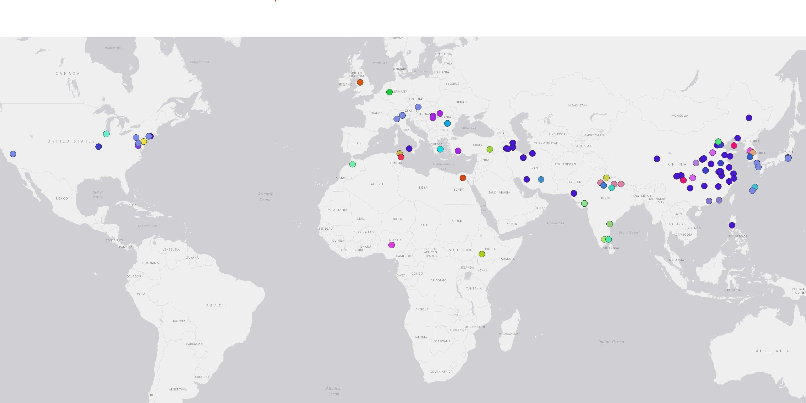

Academia Collaborations
Retraction Database Project

MAPPING RETRACTED NETWORKS
Take a look at some of the networks that span across the globe. Here you can find different authors and zoom into their connections.May 25th, 2024


The Retraction Database
Find out more about the Retraction Database by Crossref here or make your own searches following this link.
More posts about this topic
-
 Papermills
Papermills
What is a papermill? -
 Impact
Impact
Why is it important to find discuss ban reasons like "fake peer reviews"? -
 Palace
Palace
Appreciating old art

Tags
Travel Seoul Jeju Busan Clothing Shopping Food Cafe